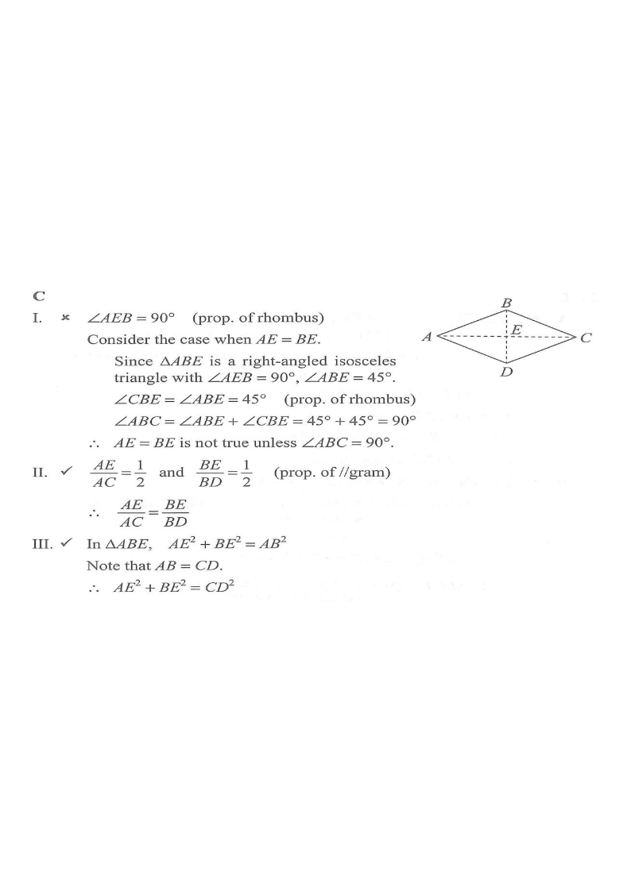

DSE 2023 · 卷二 · Q19
菱形的對角線
幾何 · 菱形性質 · 選擇題
題目
已知 $ABCD$ 為菱形，設 $E$ 為 $AC$ 與 $BD$ 的交點。下列哪項必定正確？ I. $AE=BE$ II. $\dfrac{AE}{AC}=\dfrac{BE}{BD}$ III. $AE^2+BE^2=CD^2$
A.
只有 I 及 II
B.
只有 I 及 III
C.
只有 II 及 III
D.
I、II 及 III

原題附圖
題解
A
B
C
D
E
AE
BE
AE² + BE² = AB² = CD²
圖：菱形 $ABCD$，對角線互相垂直平分於 $E$；$AE^{2}+BE^{2}=AB^{2}=CD^{2}$（題解繪）
第 1 步
菱形的對角線性質
菱形
\(AC\perp BD,\quad AE=EC,\quad BE=ED\)
菱形的對角線互相垂直平分。
故 $AE=\tfrac12 AC$，$BE=\tfrac12 BD$，且 $\angle AEB=90^\circ$。
第 2 步
檢驗 I
若 $AE=BE$，則 $\Delta ABE$ 為等腰直角三角形，$\angle ABE=45^\circ$；對角線 $BD$ 平分 $\angle ABC$，得 $\angle ABC=90^\circ$，菱形被迫成為正方形。菱形不一定是正方形，故 I 不一定成立。
第 3 步
檢驗 II
\[ \frac{AE}{AC}=\frac12,\qquad \frac{BE}{BD}=\frac12 \]兩者相等，II 正確。
第 4 步
檢驗 III
在直角三角形 $ABE$ 中，\[ AE^2+BE^2=AB^2 \]而菱形四邊相等，$AB=CD$，故 $AE^2+BE^2=CD^2$，III 正確。
第 5 步
結論
只有 II 及 III 正確，答案 C。
答案
C
（只有 II 及 III）
練習
同類新題
題目.
菱形 $ABCD$ 的對角線 $AC=16$、$BD=12$，求其周界。
顯示題解
第 1 步.
$AE=8$，$BE=6$，$\angle AEB=90^\circ$
第 2 步.
$AB=\sqrt{8^2+6^2}=10$
答案：周界 $=4\times10=40$
‹ 上一題
目錄
下一題 ›